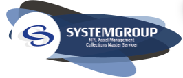
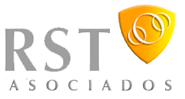

Peliculas
Se realiza aplicación de lo visto en tablas, donde se plasmaron mis peliculas favoritas. Al dar clic en cada imagen llegará al sitio web donde puede disfrutar de su trama.
- Se trabaja con HTML el uso de tablas, enlaces internos y externos
Ingeniera Ambiental con gusto por el desarrollo Web
Se realiza aplicación de lo visto en tablas, donde se plasmaron mis peliculas favoritas. Al dar clic en cada imagen llegará al sitio web donde puede disfrutar de su trama.
Primera aplicación de los temas vistos en clase, donde hay una mini biografía de la primera programadora y cuales fueron sus aportaciones en el mundo de la programación.

Se aprende a realizar formularios y se aplican enlaces tanto internos como externos.
| Nombre de la empresa | Cargo | Fecha de labor | Funciones y logros | Pérfil SItio Web |
|---|---|---|---|---|
| SCALA - UTEL UNIVERSIDAD | Gestora de éxito estudiantil | junio 2023 - Actualmente | Seguimiento académico a los estudiantes de Utel Universidad, acompañamiento frente a cuanlquier duda que pueda presentar en el manejo de sus platafromas, escalamientos a las áreas necesarias en caso de no poder solucionar en primer contacto. | |
| SYSTEMGROUP SAS | Analista de Calidad | Diciembre 2020 - Junio 2023 | Monitoreo de llamadas de línea de cobranzas (NPL), elaboración e implementación de planes de mejoramiento. Realización y entrega de informes quincenal y mensual. Sensibilización a los asesores nuevos sobre la matriz de calidad, desarrollo de OJT a los asesores nuevos según cronograma, entre otros. |  |
| UNIVERSIDAD NACIONAL DE COLOMBIA | Contratista | Marzo 2020 - Junio 2020 | Efectuar la revisión y análisis de 1956 carpetas, en desarrollo de la etapa de verificación de requisitos mínimos, de los inscritos al concurso en el aplicativo SIMO, de acuerdo a la ley colombiana, los lineamientos de la comisión nacional del servicio civil, y los protocolos definidos por el proyecto. Colaborar en las actuaciones necesarias para el efectivo cumplimiento de todas y cada una de las actividades requeridas en la verificación de requisitos mínimos, garantizando que se realice con calidad, celeridad y transparencia de acuerdo a las normas legales exigidas y los términos definidos por la entidad contratante. Garantizar el uso adecuado de la información que suministre cada aspirante.Realizar los ajustes y modificaciones sobre el estado de admisión de los aspirantes según las observaciones realizadas por la supervisión y la coordinación de requisitos mínimos, la Comisión Nacional del Servicio Civil y la dirección del proyecto o según los cambios derivados de las reclamaciones interpuestas. | |
| RST ASOCIADOS SAS | Analista de Calidad | Junio 2019 - Febrero 2020 | Capacitaciones de inducción a asesores que ingresan a las diferentes campañas que se manejan en la empresa, tanto de la historia de la empresa como del producto que se va a manejar; refuerzo en los temas que más estén afectado la calidad de gestión de cobranza de las campañas Banco Agrario, Colsubsidio, Fincomercio y servicio al cliente Blinsecurity, GMW y Calmory. Diseño y seguimiento de cronograma de actividades. Retroalimentación semanal sobre la muestra de monitoreos. Elaboración e implementación de planes de mejoramiento. Realización y entrega de informes semanales y mensuales Logros: Se mejoró la productividad y efectividad de los asesores críticos de cada una de las carteras, debido a que se realiza acompañamiento constante realizando monitoreo lado a lado y monitoreo en línea, lo que ayuda a mejorar la gestión, no solo a nivel individual sino grupal. |  |
| ASSO JURIDICA | Auditora de Calidad | Abril 2019 - mayo 21 2019 | Desarrollo de pre-turnos y capacitaciones diarias, en temas de actitud de servicio y orientación al cliente, línea de cobranzas para la entidad Colombia Movil Tigo - UNE - Edatel, plan de atención complementario, y productos relacionados con el área de cobranzas. Diseño y seguimiento de cronograma de actividades. Retroalimentación, clean desk, evaluación y soporte en operación a agentes de servicio nuevos y antiguos. Elaboración e implementación de planes de mejoramiento. Realización y entrega de informes semanales y mensuales Logros: Se mejoró el recaudo desde la efectividad en las cobranzas debido a tips que se les da a los asesores que ayudan a mejorar la gestión, no solo a nivel individual sino grupal. | |
| MILLENIUM BPO SA | Auditora de Calidad y Formadora | Diciembre 2013 - Diciembre de 2018 | Desarrollo de pre-turnos diarios y capacitaciones en temas de actitud de servicio y orientación al cliente, radicación de PQRS, línea de atención comercial, plan de atención complementario, y productos relacionados con el área Salud en la EPS Salud Total. Diseño y seguimiento de cronograma de actividades. Retroalimentación, evaluación y soporte en operación a agentes de servicio nuevos y antiguos. Elaboración e implementación de planes de mejoramiento, apoyo en control y seguimiento de indicadores de gestión. Realización y entrega de informes mensuales Logros: Se mejoró desde la efectividad en las capacitaciones e información relevante el TPC, tiempo promedio de conversación y nivel de servicio |